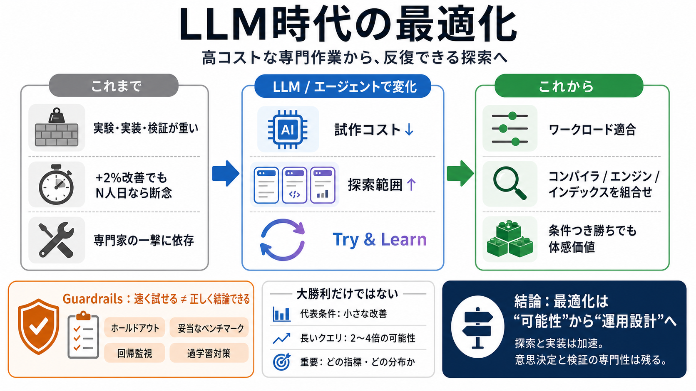

Agentic Code Optimization via Compiler-LLM Cooperation
Given an input program, the guiding agent is empowered to use reasoning tokens to determine what types of optimizations …

LLMで「高コスト」が崩れる
ソフトウェアが遅いのは「怠慢」ではなく、高コストで専門的だった最適化が要因だった。 そのコストがLLMとエージェントで下がり、安価に・広く試せる時代へ移っています（探索が速い＝勝ち筋が増える）。
なぜ「遅い」ままか
以前は「性能が+2%でも、検証にN人日」ならやめるのが合理的だった。 つまりボトルネック最適化は、実験・実装・検証の立ち上げが重すぎて普及しなかったのです。
一撃で当てる時代→反復で削る時代
LLM/エージェントにより、試作・試行の立ち上げが短縮されます（探索コスト↓）。 その結果、最適化は「専門家の一撃」から「半自動で反復できる探索」へ寄っていきます。
最適化の単位が変わる
目的は「汎用ベスト」だけでなく、ワークロード（実際の使い方）に合わせる動的・半自動最適化。 例：正規表現エンジン（FRE）の改良や、ripgrepの検索改善のような方向性です（要旨）。
「大勝利」より「条件つき勝ち」
重要なのは「どの指標・どの分布を最適化するか」で、部分最適でも体感価値に繋がり得ます。
インデックスだけでは終わらない
探索戦略が変わる
これにより「平均的に勝ちやすい」反復設計へ移行し、最適化が“構造的に”広がっていきます。
オーバーフィット対策が前提
「速く試せる」と「正しく結論できる」は別で、検証設計が中核のまま残ります。
難所にも可能性が広がる
最適化の焦点が「どこでもできる」ではなく、どの層に波及するかが論点です。
「AIが書けない→遅い？」への整理
「コード自体は簡単だから不要」という一括りの一般化は成立しにくい、という立場です。
最適化は「可能性」から「運用設計」へ
鍵は、探索と実装は加速されるが、意思決定と検証（汎化性）を担う専門性は残る、というバランスです。
記事中の固有名・論点（抜粋）
※本デッキはユーザ提供の要約・抜粋情報のみを元に構成しています。原文の参照リストや論文名の完全な特定は含みません。
Given an input program, the guiding agent is empowered to use reasoning tokens to determine what types of optimizations …
performance through Fast Feedback techniques. Cummins et al. introduced the Meta LLM Compiler, based on Code Llama, pre…
Research published in April 2026 formalized this problem precisely. In a continuous-loop agent, every step of every work…
Define latency and cost classes for workloads. Express which applications prioritize throughput, which prioritize latenc…
3. Performance requires system-level reasoning. Understanding that a function will be called 10,000 times in a loop, or …